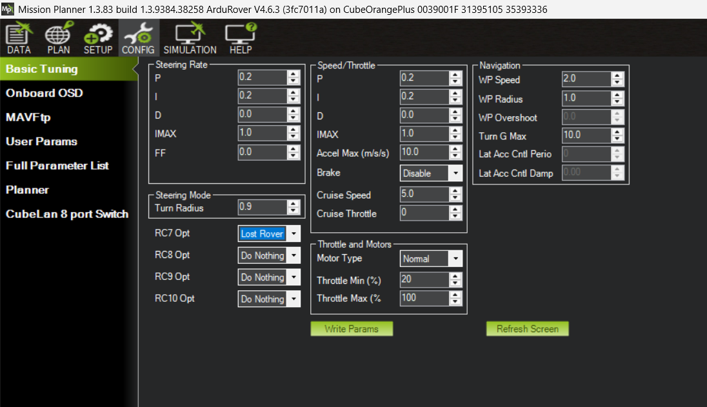

Procedure
Overview
Collect six step-response datasets per team: three parameter configurations × two control channels.
| Configuration | Speed (throttle) | Yaw rate (steering) |
|---|---|---|
| Base | <FILE1>.BIN |
<FILE2>.BIN |
| FeedForward | <FILE3>.BIN |
<FILE4>.BIN |
| Tuned | <FILE5>.BIN |
<FILE6>.BIN |
Plan for two field sessions. The first session typically surfaces issues (vehicle setup, parameter staging, pilot/scribe rhythm) that need fixing on a second day.
Read this whole page before the first field session. The goal is to understand what we are accomplishing by working through the procedural steps. The ArduPilot autopilot is a complex system with many parameters and scant documentation, and the post-processing relies entirely on the scribe’s notes to navigate dozens of .mat files. It is tough to see the trees, let alone the forest.
1. Pre-lab preparation
1.1 Day before
- Collect: Boat, 900 MHz radio, R/C transmitter, ground laptop (with Mission Planner). Make sure they are in one place and ready to transport to the field.
- Charge: Batteries for vehicle propulsion, autopilot, R/C transmitter, ground laptop.
- “Print”: Test log — one row per dataset (six total) for parameter values, observations. Template. This is just a template; students can make their own version if they want, but the key is to have a structured place to record the UTC timestamp and intent for each arm event, which is how the resulting
.matfiles get navigated during post-processing.
1.2 Day of
- Parameter files staged on the laptop. You are given the baseline
.paramfor the Base experiment. - Roles:
- Planner — drives Mission Planner: monitors ARM and mode state (MANUAL, ACRO), modifies parameters between experiments, and sets up real-time displays.
- Scribe — keeps the test card and records UTC time + intent at every arming event. The scribe’s notes are what makes the resulting tens of
.matfiles navigable during post-processing. - Pilot — drives the boat with the RC transmitter and executes the step inputs that exercise the closed-loop controllers.
2. Shore setup
As in Lab 1, confirm the following at the launch site before any data collection.
- Safety. Stay clear of the propellers whenever the boat’s propulsion battery is connected.
- SD card in the autopilot.
- Power on the autopilot.
- Establish telemetry link with Mission Planner.
- Load the baseline
.paramfile and confirm the relevantATC_*parameters are at the expected values. In particular, verifyATC_ACCEL_MAX = 0andATC_STR_ACC_MAX = 0so that step inputs reach the loops as true steps. ATC = Attitude Control, see Ardu Common Abbreviations. See the Stabilization Layer reference for what each parameter does.- Note: AY26Q3 There are untested parameter values in the above
.paramfile. These chnages are a consequence of prototyping the experiment. If you there is unexpected results, work with instructors to set parameters back to the originalACRO_TURN_RATE = 57deg/s. This is the proportional gain applied to this stick input (-1, 1) to convert the pilot R/C input into a yaw-rate setpoint commend. For For the Example Results, we had this parameter set at360deg/s, which meant that a pilot full left R/C command would put the setpoint at 2*pi rad/s of desired turn rate. The USV cannot turn that fast (constraints of thy dynamics), so the step response tests show large steady-state error because the actuation if quickly and fully saturated. A setting of57deg/s (roughly1rad/s) is slighthly above the USVs actual observeds maximum turn rate.ATC_ACCEL_MAX = 0. The documentation suggests that setting this parameter will remove the rate limit from the input shaping. For the Example Results, we hadATC_ACCEL_MAX = 10m/s^2, which was a sufficiently high rate (acceleration) to minimally shape the input, but removing the limit all together would be a slight improvment on the lab process.
- Note: AY26Q3 There are untested parameter values in the above
- Power on the propulsion system.
- Confirm ARM and that you can switch from MANUAL to ACRO modes.
- You may need to re-bind the RC transmitter and/or calibrate sensors.
3. Experiments
The lab cycles through three experiments, applying the same procedure to each. Only the parameter set changes between cases (see §3.3 for the per-experiment delta):
- Base — ArduRover default PID gains; no feedforward; rate limiters off.
- FeedForward — same PID gains as Base, with the Lab 1 sysid feedforward added (
ATC_*_FF = 1/K_dc). - Tuned — keep the FeedForward configuration, then iterate on
ATC_*_P/I/Dfor “best” response.
3.1 ARM and logging
The autopilot starts a new log file every time the pilot arms it. Treat each arm-disarm cycle as one experimental purpose: one cycle for the speed step trials, one for the yaw-rate trials. This keeps each .mat file scoped to a single channel, which makes the MATLAB time-series easier to inspect. Expect to accumulate dozens of .mat files over a session; the scribe’s notes (UTC time with seconds plus a brief intent description at every arm) are how you map each .mat back to what was being tested. The post-processed .mat filename includes the UTC timestamp.
3.2 Procedure for each experiment
Run the following sequence three times, once per experiment (Base → FeedForward → Tuned).
Set up the experiment
Change the parameter set for this experiment via Mission Planner (Config → Full Parameter Tree). For Base, load the baseline
.param. For FeedForward and Tuned, you will be changing the relevantATC_*parameters as specified in the lab instructions.
Mission Planner → Config → Basic Tuning. Most of the gains can be set from this panel. Exception: the speed-channel feedforward ( ATC_SPEED_FF) is not exposed here; edit it from the Full Parameter Tree instead.Verify the relevant
ATC_*parameters at the vehicle. Mission Planner shows live values; see the Stabilization Layer reference for what each parameter does and which ones change between experiments.
Speed (throttle) step run — one arm-disarm cycle
- Pilot brings the USV to open water and to rest.
- Pilot disarms and re-arms (closes the previous log, opens a new one). Scribe records UTC time + intent (e.g. “Base, surge step”). The full parameter set is captured inside each log, so there’s no need to save it separately.
- Pilot switches the autopilot into ACRO mode. Planner confirms ACRO in Mission Planner before the pilot proceeds.
- Repeat: 1-2 times
- Apply a step throttle command at ~50% of full stick deflection. Use a throttle value that avoids planing. Try to use the same step input in each experiment (Base, FeedForward, Tuned) so the metrics are directly comparable. Consistency is more important than the actual value. Use the R/C transmitter’s display to see a numerical value.
- Hold for 20–30 s so the speed response settles into a clear steady value. (Maintain for 3 seconds beyond when you think it is settled.)
- Return throttle to zero; allow the boat to come back to rest before the next repeat. (Again, maintain for 3 seconds beyond when you think it is settled.)
- Pilot disarms to close the log file.
You will likely need to do this a few times to get a clean step response logged.
Yaw-rate (steering) step run — one arm-disarm cycle
- Pilot brings the boat to a low, approximately constant speed, typically around ~50% throttle, but stay below planing speed.
- Pilot disarms and re-arms. Scribe records UTC time + intent (e.g. “Base, yaw step”).
- Pilot switches the autopilot into ACRO mode. Planner confirms ACRO.
- Repeat once
- Apply a step steering command at roughly ~50% rudder. (Try to use the same step input in each experiment (Base, FeedForward, Tuned) so the metrics are directly comparable. Consistency is more important than the actual value. Use the R/C transmitter’s display to see a numerical value.)
- Hold until the yaw rate settles to a steady value. (Maintain for 3 seconds beyond when you think it is settled.)
- Scribe records the surge speed at the time of each step, the step fraction, and the direction.
- Pilot disarms to close the yaw-trial log.
You will likely need to do this a few times to get a clean step response logged.
3.3 What changes between experiments
| Experiment | Parameter changes from previous | Notes |
|---|---|---|
| Base | Lab preset configuration; ArduRover stock PID gains; FF off; rate limiters off; throttle baseline off | First case — fully load the lab baseline .param |
| FeedForward | Set ATC_SPEED_FF and ATC_STR_RAT_FF to 1/K_dc from the Lab 1 plant models (see below). |
Same PID gains as Base. |
| Tuned | Adjust ATC_SPEED_P/I/D and ATC_STR_RAT_P/I/D for best response. |
FF kept on (from FeedForward). Use Mission Planner’s real-time tuning graphs to iterate on candidate gains; only execute the full arm-disarm logging cycle (steps 3–12) for the gain values you decide to keep. |
Setting the feedforward gains (FeedForward and Tuned experiments)
Set each channel’s feedforward gain to 1 / K_dc, where K_dc is the DC gain of that channel’s plant model from Lab 1:
- Speed:
G_speed(s) = 5.1 / (1.3 s + 1)→ATC_SPEED_FF = 1/5.1 ≈ 0.20 - Yaw rate:
G_yaw(s) = 0.82 / (0.51 s + 1)→ATC_STR_RAT_FF = 1/0.82 ≈ 1.22
Consider the feedforward term as the amount of input the plant requires to achieve an output of 1.0. So this is the throttle command that would result in a speed of roughly 1 m/s or the rudder command that would result in a yaw rate of roughly 1 rad/s.
3.4 Tuning the PID gains (Tuned experiment)
The Tuned experiment is iterative: try a candidate set of P / I / D gains, watch how the system responds in real time, adjust, repeat. Mission Planner is the primary instrument for this — its real-time tuning graphs let you see the response without going through the field-quality-check loop for every iteration.
The ArduRover docs page Tuning Speed and Throttle (the Desired Speed to Throttle PID Tuning section) is the canonical reference. The same general approach applies to the yaw-rate channel — there isn’t a parallel docs page for it, but the workflow is the same:
- Start from the FeedForward configuration. P, I, D at Base values; FF at 1/K_dc. The boat should already track the target reasonably well.
- Open Mission Planner’s real-time tuning graphs (Flight Data → Tuning checkbox). Plot the desired vs measured signal for the channel you’re tuning.
- One gain at a time, small steps. Increase P first (faster response, more overshoot). If overshoot is excessive, back off P or add a small amount of D. If the steady-state error is non-zero after the FF contribution, increase I.
- Don’t log every iteration. Watching the real-time graphs is enough during the iteration. Only when you’ve settled on a candidate gain set worth keeping, run the full arm-disarm logging cycle (steps 3–12 of §3.2) so you have a clean
.matfile with the parameter snapshot for the post-processing. - Stop when “good enough.” A perfect tune is rare in one field session. Aim for a noticeable improvement in rise time and settling vs the FeedForward case, with overshoot still controlled.
3.5 Common gotchas
- Don’t change parameters while ARMed. Parameter changes get baked into the active log in a way that makes it hard to verify what was active when. Disarm, change, save the new param file, then re-arm.
- Verify ACRO mode every time. A test in MANUAL looks identical to one in ACRO from the pilot’s perspective, but the closed-loop controllers aren’t engaged. The planner’s ACRO confirmation in step 5 / step 10 is the safety net; don’t skip it.
- Inter-step gap too short. Between repeats within a run, allow the response to fully settle (return to rest, or to baseline yaw rate) before the next step. A short gap mixes one step’s tail into the next step’s start.
- Same step fraction across Base / FeedForward / Tuned. Comparing rise time, overshoot, and steady-state error across experiments should be done using equivalent amplitude step inputs for the tests. Since the pilot is setting the amplitude, try to be consistent with command amplitude across the three test cases.
- One channel per arm-disarm cycle. Don’t intermingle speed and yaw steps in the same log; it makes the MATLAB inspection harder than it needs to be.
- Two timezones. ArduPilot logs and the post-processed
.matfilenames are in UTC. Scribe notes are in local time. The post-processing step adds the UTC stamp to the filename automatically; the scribe should record UTC at the field too so the two match without arithmetic later. Instructors use the UTC formatYYYYMMDD_HHMMSSfor the appended timestamp.
4. End-of-day
Wrap up the field session.
- Upload raw
.BINlogs to the shared data repository (ME2801_USV_Shared). Add a subfolder for your team (e.g.TeamX) and put everything there:- the raw
.BINfiles (instructors will convert to.mat); - the scribe’s notes / test card;
- any photos or other field-session materials.
- the raw
- Disconnect all batteries.
- Drain the boat, put batteries on chargers, and stow the vehicle with the rest of the team’s lab materials (boat, 900 MHz radio, R/C transmitter).
5. Post-processing and quality check
The quality-check step can’t happen until the .BIN logs have been converted to .mat, which is run from the command line.
- Convert
.BINfiles to.mat. Work with the instructors to runbin2mat.pyon the uploaded files. The resulting.matfiles are what the MATLAB analysis scripts expect, and the UTC timestamp in each filename matches the scribe’s notes. - Inspect experiment files
- There are two important things to verify
- That the scribe logs for the time of the pertinent experiment match the
.matfile timestamps. - That the timeseries in the
.matfile look like a clean step response with the characteristics needed to evaluate the performance metrics (rise time, overshoot, settling time, steady-state error).
- That the scribe logs for the time of the pertinent experiment match the
- Verify you can run the
closedloop_assess_example.mas-is, then adapt it to your own log filename and run it once per.matfile.- The script produces the timeseries and PID-internals figures and computes step-response metrics. Suggested order is to run it across all six experiment-channel
.matfiles first, just to confirm each captured a clean step response.
- The script produces the timeseries and PID-internals figures and computes step-response metrics. Suggested order is to run it across all six experiment-channel
- Suggested characteristics to quickly verify:
- There are no missing signals in the plots, compared with the example. Missing signals could be a mistake in the autopilot logging configuration.
- Setpoint reaches a reasonable commanded value - consistent with the scribe logs.
- Values all achieve a “steady state” within the duration of the step inputs.
- No long gaps in the timeseries
- There are two important things to verify